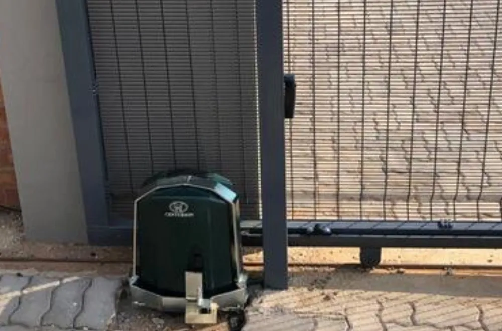
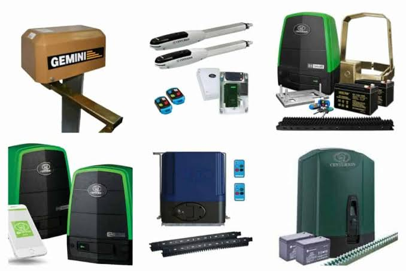

Services
Gate Automation
We supply, install and maintain automation systems for residential, commercial and industrial gates.
Services include
- Sliding Gate Motors
- Swing Gate Motors
- New Motor Installations
- Gate Motor Repairs
- Motor Replacements
- Remote Programming
- Safety Beam Installation
- Preventative Maintenance
- Emergency Repairs


We work with trusted gate automation brands including Centurion, ET Nice, Gemini, DACE and DigiDoor. Already have a motor? We service and repair most major brands and can automate an existing gate after a site inspection.